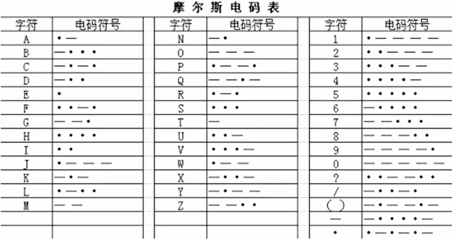

MISC之信息搜集与编码分析¶
MISC¶
MISC = miscellaneous 杂项 大杂烩
-
所有无法归入CTF主流类别的技能挑战
-
作用
- 基础知识
- 技能面
- 逆向思维
- 密码学
信息搜集¶
-
科学上网
-
地图和街景搜索
- 国外：Google Map、Earth
-
国内：百度地图、腾讯地图（卫星视图、全景视图）
-
网络世界到物理世界
- IP2Location
- 纯真数据库
示例¶


编码分析¶
通信领域常见编码¶
-
电话拨号
-
1-9 分别使用 1-9 个脉冲，0 则表示使用 10 个脉冲
-
Morse编码
- 摩尔斯电码（又译为摩斯密码，Morse code）是一种时通时断的信号代码。
1 2 3 | |

题目：-... -.- -.-. - ..-. -- .. ... -.-.
计算机领域常见编码¶
-
二进制01编码
-
Hex十六进制编码
-
00-FF
-
十六进制（简写为hex或下标16）在数学中是一种逢16进1的进位制。一般用数字0到9和字母A到F（或a ~ f）表示，其中:A ~ F表示10 ~ 15，这些称作十六进制数字。
-
ASCII编码
-
我们一般使用的 ascii 编码的时候采用的都是可见字符，而且主要是如下字符
0-9, 49-57A-Z, 65-90a-z, 97-122{},123/125

题目：掀桌子
Base家族¶
-
Base64编码
-
基于64个可打印字符来表示二进制数据的表示方法
-
字符集：大小写字母各26个、10个数字、加号"+"、斜杠 ”/ “、一共64个字符。等号” = “作为后缀用途
1 2 3
每3个字符由4个可打印字符表示。 若原数据长度不是3的倍数且剩下1个输入数据，则在编码结果后加两个=， 若剩下两个数据，则在编码结果后加一个= -
特征:大小写一串，可能有 = +
-
Base32
32个可打印字符，A ~ Z、2 ~ 7 、32个可打印字符，“=”符号用作后缀填充
1 2 3 4 | |
- Base16
16个可打印字符，A ~ F、0 ~ 9，16个可打印字符。
- Base58
相比Base64，Base58不使用数字"0"，字母大写'O'，字母大写'I'，和字母小写'l'，以及"+"和"/"符号
1 2 3 4 | |
Base家族示例 题目示例:base64÷4
现实世界常见编码¶
- 条形码
- 宽度不等的多个黑条和空白，按照一定的编码规则排列，用以表达一组信息的图形标识符
- 国际标准
- EAN-13 商品标准，13 位数字
- Code-39：39 字符
- Code-128：128 字符
- 在线工具
题目示例：Banmabanma

-
二维码

-
二维码物理问题


-
二进制二维码
- 题目给出了一段全是01的数字串，且数字的长度为一个整数的平方（如25^2=625）时，有可能是以0、1表示黑或者白的一个像素，可以生成一个正方形的像素图。
-
二维码隐藏信息
- 二维码识别工具QR_Research

- 二维码识别工具QR_Research
1 2 3 4 5 6 7 8 9 10 11 | |
其他编解码¶
-
ROT13（回转13位，rotateby13places，有时中间加了个减号称作ROT-13）是一种简易的置换暗码。它是一种在网路论坛用作隐藏八卦、妙句、谜题解答以及某些脏话的工具。